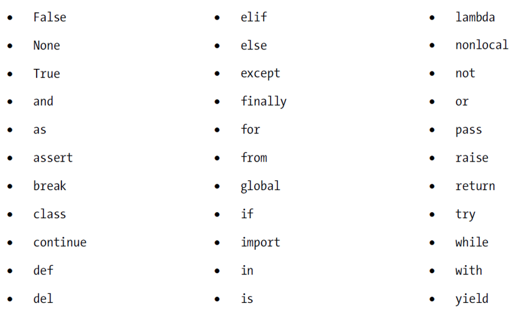
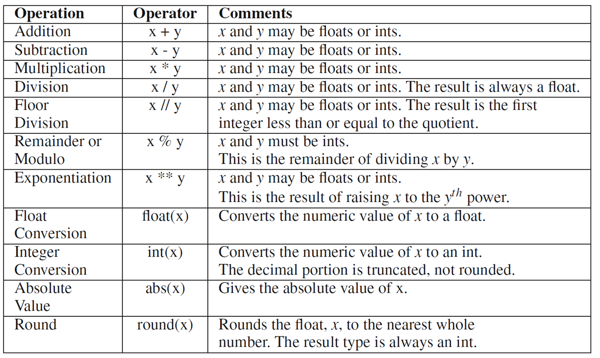
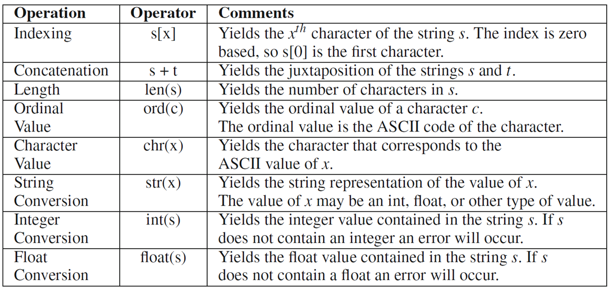
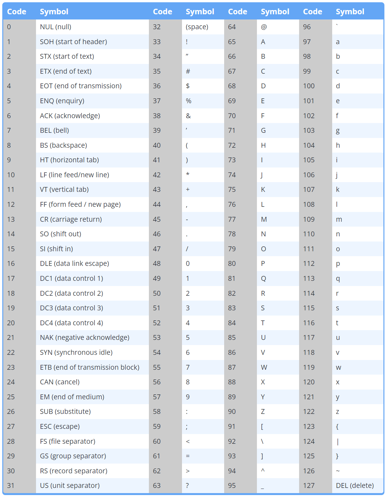

Objects of basic built-in data types
In this chapter:
- Objects or variables
- Types
- Initializing and printing variables
- Choosing identifiers
- Objects and their references
- Arithmetic expressions
- Exercise: hypotenuse
- Exercise: weight conversion
- Integer representation
- Operations on strings
- Output string formatting
- Exercise: hypotenuse with user input and output formatting
- Exercise: Arithmetic sum
Objects or variables
- User input, program output and intermediary data used to solve a problem need to be stored in memory to be accessed and used as needed
- A program needs to designate a memory container to store a specific piece of data
- A program uses aliases or names to designate specific pieces of data
- The interpreter (and the Operating System) maps these aliases to actual addresses (locations) in the memory hardware, where the data is written (stored)
- An object (variable) is a programming abstraction used to represent (name) a memory location where some specific data is stored
- It has:
- An identifier
- A value
- A type; inferred from the initial value assigned to it
- E.g.: the statement
x = 10initializes an object with identifierxto the value10, so its type will be integer
Types
- The basic built-in types are:
intfor integerfloatfor floating point which is an approximation of real numbersstrfor string which is a sequence of characters (text)boolfor Boolean
- Other compound / advanced data types will be discussed later
Initializing and printing variables
- Create a string, an integer, a Boolean and a floating point number objects.
- The string should be named
sampleStringand should contain the word"hello". - The floating point number should be named
sampleFloatand should contain the number10.5 - The Boolean should be named
sampleBooleanand should contain the valueTrue. - The integer should be named
sampleIntand should contain the number20.
- The string should be named
- Write the necessary output statements to obtain the following output.
sampleString = hello
sampleInt = 20
sampleFloat = 10.5
sampleBoolean = True
Make sure that if you change the initial value of a variable, the displayed value changes automatically, without editing the corresponding output statement
Solution
sampleString = "Hello"
sampleInt = 25
sampleFloat = 10.5
sampleBoolean = False
print("sampleString =", sampleString)
print("sampleInt =", sampleInt)
print("sampleFloat =", sampleFloat)
print("sampleBoolean =", sampleBoolean)
Notes
printfunction can take variables as arguments and outputs the value of the variableprintfunction can take multiple comma-separated arguments:- Arguments can be literal text, variables, expressions, etc.
- By default, consecutive arguments are separated by a single space (see customization later)
- By default, every print statement outputs its arguments to a new line (see customization later)
Choosing identifiers
- Naming identifiers sensibly makes code more readable and easily understandable
- Sensible identifiers are those describing the concepts their objects represent
- Multi-word identifiers can be used separated with underscores or inter-capitalization
- First character can only be a letter or the underscore
- Identifiers are case sensitive
- Avoid keywords or reserved words

Objects and their references
- With an assignment statement, an object identifier is mapped to a memory address, AKA reference, where the value of the right-hand-side of the statement is stored
- A subsequent assignment is a different identifier-to-reference mapping i.e. a reference to a different memory location where the new value is stored
- The memory location no longer mapped to the identifier is reclaimed by the garbage collector to be used for other objects (subsequent mappings)
- This is why a variable (object) can change types during the execution of a program
- can use the
type()function to get the data type of an objects
- can use the
x = 5
print(type(x))
x = "hello"
print(type(x))
Arithmetic expressions
- Write a program that displays your name in the console
- Solving computational problems (even the simplest) requires performing arithmetic computation using the input data, constant values and more
- An arithmetic expression is a combination of arithmetic operators (+, -, /, etc.) and numerical operands used to perform such computations
- An expression is evaluated at execution time and its result assigned to a variable, printed, etc. depending on the statement it appears in
- Operands can be literal numeric values or variables of type
intorfloat

- Expressions can have mixed types operands (some
intand somefloat); in such case, they are evaluated using float arithmetic and the result is always a float - Conversion from floating point to integer via truncation of decimal part
- Conversion from integer to floating point by adding a 0 decimal (fractional) part
- Conversion operators within expressions produce operands in the intended data type but do not alter the object’s original type
- Try expressions that combine conversion and arithmetic operators
- Arithmetic operators precedence is similar to that of calculators including parentheses (PEDMAS)
- More advanced mathematical operations and functions (square root, trigonometric, etc.) require invoking the math library (to be discussed later)
Run the code below to check the behavior of the above operators:
x = 22.7
y = 5.2
print("x = ", x)
print("y = ", y)
print("Operations on floats ...")
print("x+y = ", x + y)
print("x-y = ", x - y)
print("x*y = ", x * y)
print("x/y = ", x / y)
print("x//y = ", x // y)
print("x%y = ", x % y)
print("x**y = ", x ** y)
print("int(x) = ", int(x))
print("x is still ", x)
print("Converting and overwriting ...")
x = int(x)
y = int(y)
print("x = ", x)
print("y = ", y)
print('Operations of ints ...')
print("x+y = ", x + y)
print("x-y = ", x - y)
print("x*y = ", x * y)
print("x/y = ", x / y)
print("x//y = ", x // y)
print("x%y = ", x % y)
print("x**y = ", x ** y)
print("converting to float: ")
print("float(x) = ", float(x))
print("float(y) = ", float(y))
print("rounding: ")
print("10 / 3 = ", 10 / 3)
print("round(10 / 3) = ", round(10 / 3))
print("round(10 / 3, 2) = ", round(10 / 3, 2))
print("10 / 4 = ", 10 / 4)
print("round(10 / 4) = ", round(10 / 4))
print("round(10 / 4, 2) = ", round(10 / 4, 2))
print("10 / 6 = ", 10 / 6)
print("round(10 / 6) = ", round(10 / 6))
print("round(10 / 6, 2) = ", round(10 / 6, 2))
Exercise: hypotenuse
- Write a short program that computes the length of the hypotenuse of a right triangle given the two legs. The program should:
- initializes two variables
sideA,sideBwith the lengths of the two legs of a right triangle - using the Pythagorean theorem, computes the length of the hypotenuse of the triangle and stores it in a variable
sideC - prints the result
- initializes two variables
- Notes:
- The Pythagorean theorem states that the sum of the squares of the two legs of the triangle equals the square of the hypotenuse.
- You can obtain the square root by raising to the power 0.5
- Try values 6 and 8 for
sideAandsideB - Try floating point values like 2.6 and 3.1
Solution
sideA = 6
sideB = 8
sideC = (sideA ** 2 + sideB ** 2) ** 0.5
print(sideC)
Exercise: weight conversion
- Write a program which:
- Initializes a float variable
Kgwith a value corresponding to a weight in Kilograms - computes the equivalent weight in pounds and ounces and stores the result in two integer variables
LbandOz - print the result following the example below
2.89 Kg = 6 Lbs and 5 Oz - Initializes a float variable
- Notes:
- 1 Lb = 453.592 g = 0.453592 kg
- 1 Oz = 28.3495 g = 0.0283495 kg
- The number of ounces is the number of whole ounces remaining after counting the number of whole pounds. It must be less than the number of ounces in a pound i.e. less than 16.
- e.g:
0.9 Kg = 1 Lbs and 15 Ozand0.91 Kg = 2 Lbs and 0 Oz
- e.g:
Solution
Kg = 2.89
Lb = Kg // 0.453592
Lb = int(Lb)
remainderKg = Kg % 0.453592
Oz = remainderKg // 0.0283495
Oz = int(Oz)
print(Kg, "Kg =", Lb, "Lbs and", Oz, "Oz")
# other solution
# Lb = Kg / 0.453592
# fracLb = Lb - int(Lb) # get the fraction of a pound
# Lb = int(Lb) # get whole number of pounds
# Oz = fracLb * 16 #convert a fraction of a pound to Ounces
# Oz = int(Oz) # round to the closest integer
# print(Kg, "Kg =", Lb, "Lbs and", Oz, "Oz")
# other solution
# allInOz = Kg / 0.0283495 # total number of Ounces, with fraction
# Lb = int(allInOz // 16) # get multiple of 16 ounces as number of pounds
# Oz = int(allInOz % 16) # remainder of ounces (less than 16)
# print(Kg, "Kg =", Lb, "Lbs and", Oz, "Oz")
Integer representation
- Integers are commonly initialized and by default printed in their base 10 form
- Integers can be initialized and printed in hexadecimal, octal or binary form
- Use
0x,0oand0bprefixes - Use
hex(),oct()andbin()operators
- Use
a = 145
print("a =", a)
binary_a = bin(a)
print("bin(a) =", binary_a)
print("hex(a) =", hex(a))
print("oct(a) =", oct(a))
b = 0b10010001
print("b= ", b)
c = 0x91
print("c= ", c)
d = 0o221
print("d =", d)
s = "0b10010001"
print("s = ", s)
e = int(s, 2)
print("e = ", e)
s = "0x91"
print("s = ", s)
e = int(s, 16)
print("e = ", e)
Operations on strings
- Many computational problems involve text manipulation
- String objects store text as a sequences of characters and undergo a different set of operations than numerical objects
inputfunction returns (generates) by default a string value.- If the desired input is numerical, a type conversion is needed
- Literal strings are specified via single quote or double quote (and other, to be discussed later)
- Characters are internally stored as numbers following the ASCII mapping


Checkout the following code to understand the behavior of some of the operations
s1 = "Hello world!"
print("The string '", s1 , "' contains", len(s1), "characters.")
print("The first character of '", s1, "' is", s1[0])
print("The fifth character of '", s1, "' is", s1[4])
print("The ASCII value of the second character is", ord(s1[1]))
print("The string made of the 4th, 6th and second character of s1 is", s1[3] + s1[5] + s1[1])
userName = input("What is your name? ")
greeting = "Hello " + userName
print(greeting)
numericInput = input("Please enter a number: ")
#print("The square of your number is", numericInput**2)
print(type(numericInput))
numericInput = float(numericInput)
print("The square of your number is", numericInput**2)
Output string formatting
printhas a default formatting of its arguments:- each statement prints to one line
- multiple arguments are separated by single space
For more control over the program output:
- Add special arguments to the print statement:
sep: specify the character separating multiple arguments, defaults to a single spaceend: specify the character appended to the end of the output, defaults to\n(new line)
- Convert numeric values to strings using
str(), then concatenate strings before printing them - Use printf-style string formatting
- Use the format() function on literal strings
- Use f-strings
- https://docs.python.org/3/reference/lexical_analysis.html#f-strings
The following is an example of the use of the above approaches
base = input("Please enter a number:")
base = float(base)
exponent = float(input("Please enter an exponent:"))
answer = base ** exponent
# print sep argument
print(base, "^", exponent, " = ", round(answer, 2), sep="")
# Printing a single formatted output string
# solution 1: convert then concatenate
output1 = str(base) + "^" + str(exponent) + " = " + str(answer)
print(output1)
# or simply
# print(str(base)+"^"+str(exponent)+" = "+str(round(answer, 2)))
# solution 2: C-style formatting
output2 = "%.2f^%.2f = %.2f" % (base, exponent, answer)
print(output2)
# or simply
# print("%.2f^%.2f = %.4f"%(base, exponent, answer))
# solution 3: format() method
output3 = "{0:.2f}^{1:.2f} = {2:.2f}".format(base, exponent, answer)
print(output3)
# or simply
# print("{0:.2f}^{1:.2f} = {2:.2f}".format(base, exponent, answer))
# solution 4: f-string
output3 = f"{base:.2f}^{exponent:.2f} = {answer:.2f}"
print(output3)
# or simply
# print(f"{base:.2f}^{exponent:.2f} = {answer:.2f}")
# or also
print(f"{base:.2f}^{exponent:.2f} = {base ** exponent:.2f}")
# using sep and end
print("Hello", "everyone")
print("Welcome", "to", "CS201", sep="", end="!")
print("just go to the next line already")
print("finally!!")
print("...")
Exercise: hypotenuse with user input and output formatting
- Modify the code of the hypotenuse exercise by adding user prompts to get the values of
sideAandsideBfrom the user.- Test what happens if the user enters non numeric values
- Enhance the output by printing a whole phrase about the triangle measurements, where side lengths are printed with a maximum of two decimals
Solution
sideA = float(input("Please enter the length of the first side: "))
sideB = float(input("Please enter the length of the second side: "))
sideC = (sideA ** 2 + sideB ** 2) ** 0.5
print(f"The hypotenuse of the triangle with sides {sideA:.2f} and {sideB:.2f} has a length of {(sideA ** 2 + sideB ** 2) ** 0.5:.2f}")
# print("The hypotenuse of the triangle with sides {0:.2f} and {1:.2f} has a length of {2:.2f}".format(sideA, sideB, sideC))
Exercise: Arithmetic sum
Write a program which
- prompts the user for a positive integer, say
n - computes the sum of the first integers up to
nusing the formulan*(n+1)/2 - prints the result as in this sample run below, using a single string argument to the print function
Sample run:
This program computes the sum of the first N integers.
Please enter a positive integer N: 100
sum(1..100)=5050
Solution
print("This program computes the sum of the first N integers.")
N = int(input("Please enter a positive integer N: "))
sumToN = int(N * (N+1) / 2) # convert to int because the result of / is always float
# while this sum is always a whole number
#sumToN = N * (N+1) // 2 # or use floor division
print(f"sum(1..{N})={sumToN}")
# print(f"sum(1..{N})={N * (N+1) // 2}") # Or, no need for the sumToN variable,
# use the expression in the placeholder
# or any of the below
# print("sum(1.." + str(N) + ")=" + str(sumToN))
# print("sum(1..%d)=%d" % (N, sumToN))
# print("sum(1..{})={}".format(N, sumToN))